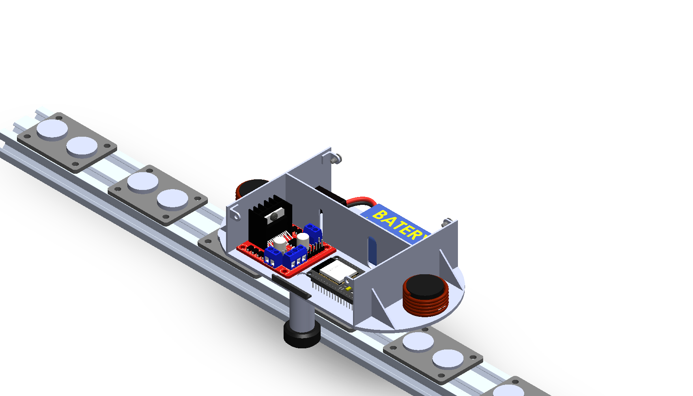
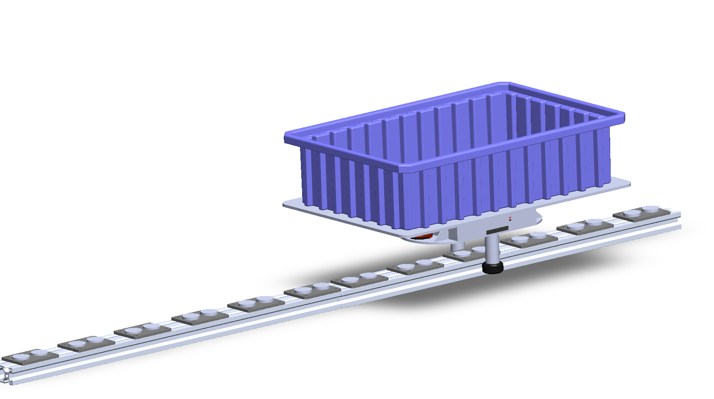

Lorentz-Force Driven Conveyor Alternative
An automated transportation system that moves small items along a track using electromagnetic force instead of belts or rollers. It applies the Lorentz force to practical automation, as a scalable alternative to conveyor systems for moving small products.


The system runs on the Lorentz force: a charged particle moving through a magnetic field feels a force perpendicular to both its velocity and the field. Here, controlled current through the platform's coils creates that interaction and propels the platform along the track.
This project grew out of my time in automation at Caterpillar, where I saw firsthand how costly it was to expand or reroute a traditional conveyor system for moving small products. That inflexibility pushed me to look for alternatives.
The electromagnetic system answers that problem with a modular, infinitely expandable track: motion lives in each individual unit instead of in shared mechanical infrastructure, so extending the line is just adding more track.
Extending the track is the only scaling step required, since each unit moves independently rather than through shared mechanical infrastructure. The same independence keeps maintenance simple: fewer moving parts than a conventional conveyor, and a layout that's easy to reshape as production needs change.